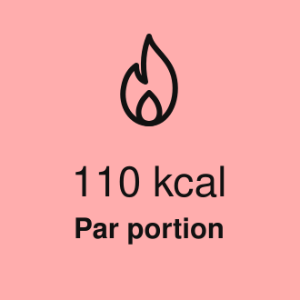
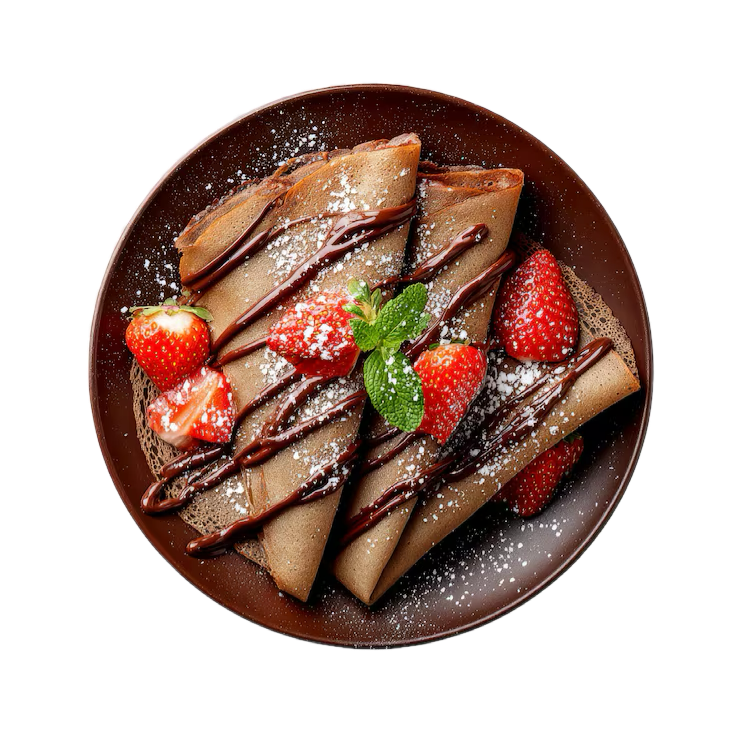

HEADER
HEADER
HEADER
Crêpe
Des crêpes rapide et facile à faire !
Résumé

Ingrédients
Recette
1/ Verser la farine, le sucre et le sel dans un cul de poule puis mélanger les ingrédients secs avec un fouet pour homogénéiser.
2/ Ajouter les œufs et incorporer l’huile.
3/ Verser le lait progressivement en fouettant pour éviter les grumeaux afin d'obtenir une pâte fluide, lisse et homogène.
4/ Laisser reposer la pâte au minimum 1 heure à température ambiante.
5/ Chauffer une poêle ou une crêpière légèrement huilée.
6/ Verser une louche de pâte et répartir uniformément.
7/ Cuire chaque crêpe 1 à 2 minutes de chaque côté jusqu’à légère coloration.
8/ Réserver les crêpes au chaud et répéter l’opération avec le reste de pâte.
